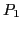
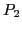
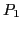
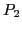
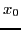
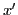
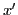
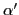

Circle of curvature
Center of curvature14.1. If a circle be drawn
through three points  , ,  on a plane curve, and if
and be made to approach along the curve as a
limiting position, then the circle will in general approach in
magnitude and position a limiting circle called the circle of
curvature of the curve at the point . The center of this
circle is called the center of curvature.
, ,  on a plane curve, and if
and be made to approach along the curve as a
limiting position, then the circle will in general approach in
magnitude and position a limiting circle called the circle of
curvature of the curve at the point . The center of this
circle is called the center of curvature.
Figure 14.1:
Geometric visualization of the circle of curvature.
|
Let the equation of the curve be
and let ,  , be the abscissas of the points
, , respectively,
the coordinates
of the center, and the radius of the circle passing through
the three points. Then the equation of the circle is
, be the abscissas of the points
, , respectively,
the coordinates
of the center, and the radius of the circle passing through
the three points. Then the equation of the circle is
and since the coordinates of the points , ,
must satisfy this equation, we have
Now consider the function of  defined by
defined by
in which  has been replaced by
has been replaced by  from (14.1).
from (14.1).
Then from equations (14.2) we get
Hence, by Rolle's Theorem (§13.1),  must vanish
for at least two values of , one lying between and ,
say , and the other lying between and say ; that is,
must vanish
for at least two values of , one lying between and ,
say , and the other lying between and say ; that is,
Again, for the same reason, must vanish for some value
of between and , say  ; hence
; hence
Therefore the elements ,  , of the circle
passing through the points , , must satisfy the three
equations
, of the circle
passing through the points , , must satisfy the three
equations
Now let the points and approach as a limiting
position; then , , , , will all approach
as a limit, and the elements  ,
,  ,
,  of the
osculating circle are therefore determined by the three equations
of the
osculating circle are therefore determined by the three equations
or, dropping the subscripts, which is the same thing,
differentiating (14.3).
differentiating (14.4).
Solving (14.4) and (14.5) for
and , we get
,
hence the coordinates of the center of curvature are
Substituting the values of and from
(14.6) in (14.3), and solving for , we get
which is identical with (12.5), [§12.5].
Hence
Theorem 14.1.1
The radius of the circle of curvature equals the radius of curvature.
david joyner
2008-08-11